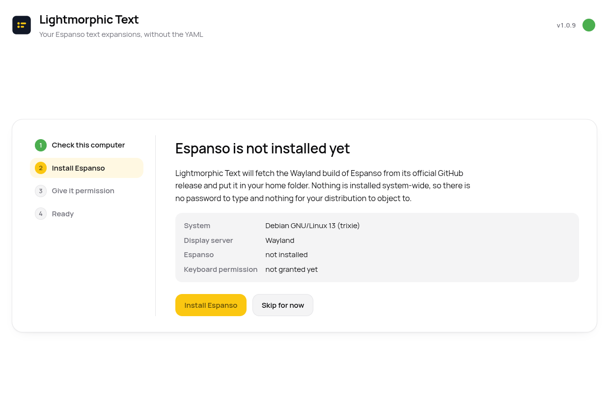
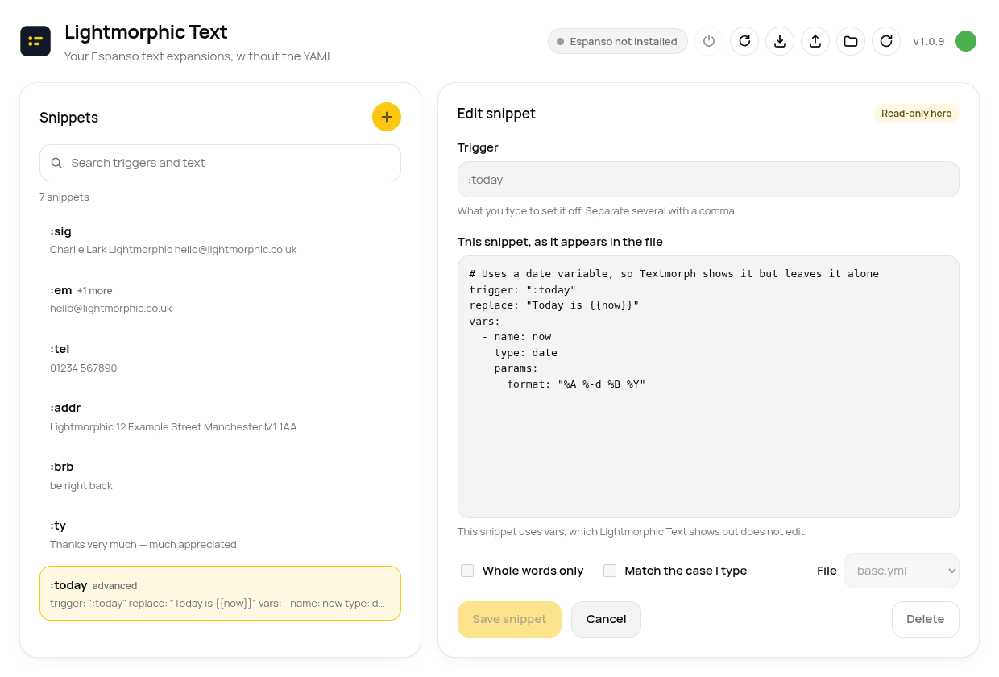

How to use Lightmorphic Text
Everything the app does, shown rather than described. Five minutes here and you know the whole thing.
The first run sets everything up
The first time you open the app, it checks what your computer already has and does the rest itself: it fetches Espanso — the engine that does the actual text expanding — and, on Wayland desktops, asks once for permission to read the keyboard, using your desktop's own password prompt. Nothing is installed system-wide, so it works the same on immutable systems like openSUSE Aeon or Fedora Silverblue.

Adding a snippet is a form, not a file
Press the yellow plus, type the trigger (what you'll type, like :sig) and the replacement (what appears instead), and save. The snippet works the moment it's saved — Espanso is reloaded for you. "Whole words only" stops a trigger firing in the middle of longer words, and "Match the case I type" makes :brb and :BRB behave differently.

Search finds anything, as you type
The search box matches triggers and replacement text at the same time, highlighting what it found. A half-remembered snippet — "the one with thanks in it somewhere" — is a few keystrokes away.

Clever snippets are shown, never touched
Espanso can do advanced things — dates, forms, scripts. Snippets like that are listed and shown exactly as they appear in your file, marked advanced and read-only. The app never rewrites what it can't fully represent, so nothing you built by hand can be quietly broken.

The buttons along the top
The little dot knows about updates
It lives in the tray
Closing the window doesn't quit: the app tucks itself into the tray and keeps checking for updates quietly. Click the tray icon to bring it back, or use its menu to quit properly. (On GNOME the tray needs the AppIndicator extension; on desktops without any tray, closing simply quits.)
Every save keeps a backup
Before any file is changed, a dated copy is kept under ~/.local/share/lightmorphic-text/backups. Your comments, spacing and ordering are preserved on every save — only the values you actually changed are rewritten.
Your files, standard Espanso
Everything is plain Espanso configuration in ~/.config/espanso. Stop using the app tomorrow and your snippets keep working; point any other Espanso tool at them and it all just fits.